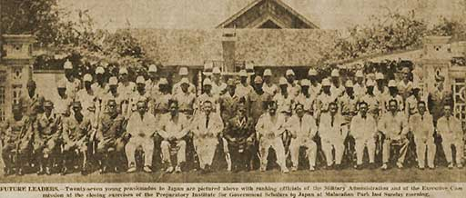

|
j
a v a s c r i p t |
June 28, 1943
Big picture in La Vanguardia about the graduation of the 27 pensionados; the group includes the sons of Sison, Osias, Velarde, Laurel, Desiderio, and two of Vargas. The Japanese couldn't have picked a better list of hostages.

Pensionados Pose at Malacañang Park
Guinto and Duran are back from Japan; the rest of the inspection committee is still in Osaka. Alunan too is back from an extended "pacification mission" to the Visayas without any word of its success. |
|
|
|
|